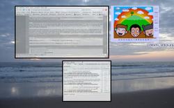

Skippy
Archivierte Anleitung
Dieser Artikel wurde archiviert, da er - oder Teile daraus - nur noch unter einer älteren Ubuntu-Version nutzbar ist. Diese Anleitung wird vom Wiki-Team weder auf Richtigkeit überprüft noch anderweitig gepflegt. Zusätzlich wurde der Artikel für weitere Änderungen gesperrt.
Anmerkung: Der inoffizielle Nachfolger ist im Artikel Skippy-XD beschrieben.
Zum Verständnis dieses Artikels sind folgende Seiten hilfreich:
Skippy  ist ein X11 Fensterwechsler angelehnt an Apple Exposé
ist ein X11 Fensterwechsler angelehnt an Apple Exposé  von Mac OS X . Es zeigt dem Nutzer die verschiedenen Fenster die auf dem Desktop sind, schön arrangiert an und man kann dann mit der Maus oder den Pfeiltasten der Tastatur ein Fenster auswählen.
von Mac OS X . Es zeigt dem Nutzer die verschiedenen Fenster die auf dem Desktop sind, schön arrangiert an und man kann dann mit der Maus oder den Pfeiltasten der Tastatur ein Fenster auswählen.
Wenn der Grafikkarten Treiber den man benutzt die Composite-Erweiterung unterstützt, bietet es sich an, anstelle von Skippy das Programm Skippy-XD zu benutzen.
Installation¶
Skippy¶
Ubuntu-Quellen¶
Bis einschließlich Ubuntu 7.10 Gutsy Gibbon ist Skippy in den Paketquellen enthalten. Folgendes Paket muss installiert [1] werden:
skippy (universe, [2])
|  |
| Projektseite |
Kompilieren¶
Um das Programm Skippy zu kompilieren lädt man sich den Quellcode von der Webseite herunter, entpackt [3] ihn und kann es danach wie gewohnt kompilieren [4], wobei ./configure nicht ausgeführt werden muss, und installieren. Im Vorfeld müssen folgende Pakete installiert [1] werden:
debhelper
libxft-dev
libimlib2-dev
libxmu-dev cdbs
libpcre3-dev
libxinerama-dev
Paketliste zum Kopieren:
sudo apt-get install debhelper libxft-dev libimlib2-dev libxmu-dev cdbs libpcre3-dev libxinerama-dev
sudo aptitude install debhelper libxft-dev libimlib2-dev libxmu-dev cdbs libpcre3-dev libxinerama-dev
Skippy-XD¶
Kompilieren¶
Skippy-XD ist nicht in den Paketquellen und muss von Hand installiert werden. Dazu installiert man zunächst die Abhängigkeiten [1]:
Paketliste zum Kopieren:
sudo apt-get install cdbs libexpat1-dev libfontconfig1-dev libfreetype6-dev libice-dev libimlib2-dev libjpeg62-dev libltdl3-dev libpcre3-dev libpng12-dev libsm-dev libtiff4-dev libtiffxx0c2 libungif4-dev libx11-dev libxau-dev libxdmcp-dev libxext-dev libxft-dev libxinerama-dev libxmu-dev libxmu-headers libxrender-dev libxt-dev pkg-config x11proto-core-dev x11proto-input-dev x11proto-kb-dev x11proto-render-dev x11proto-xext-dev x11proto-xinerama-dev xtrans-dev zlib1g-dev libxcomposite-dev libxfixes-dev libxdamage-dev libxrender-dev
sudo aptitude install cdbs libexpat1-dev libfontconfig1-dev libfreetype6-dev libice-dev libimlib2-dev libjpeg62-dev libltdl3-dev libpcre3-dev libpng12-dev libsm-dev libtiff4-dev libtiffxx0c2 libungif4-dev libx11-dev libxau-dev libxdmcp-dev libxext-dev libxft-dev libxinerama-dev libxmu-dev libxmu-headers libxrender-dev libxt-dev pkg-config x11proto-core-dev x11proto-input-dev x11proto-kb-dev x11proto-render-dev x11proto-xext-dev x11proto-xinerama-dev xtrans-dev zlib1g-dev libxcomposite-dev libxfixes-dev libxdamage-dev libxrender-dev
Nun lädt man sich den neusten Quellcode von der Webseite herunter, entpackt [3] ihn und kann es danach wie gewohnt kompilieren [4] und installieren. Die einzige Besonderheit ist, dass Skippy-XD vor dem Kompilieren nicht konfiguriert werden muss.
Benutzung¶
Die Benutzung ist recht einfach. Man startet Skippy mit dem Befehl:
skippy
bzw. Skippy-XD mit dem Befehl:
skippy-xd
Danach kann man durch Drücken von F11 die Fensterauswahl starten.
Wenn es einem gefällt sollte man Skippy in den Autostart [5] eintragen damit es bei jedem Systemstart automatisch mitgestartet wird und benutzt werden kann.
Konfiguration¶
Um die vom Programm verwendeten Farben an den eigenen Desktop anzupassen und andere Einstellungen vorzunehmen genügt es die Datei .skippyrc im Homeverzeichnis mit einem Editor [6] den eigenen Wünschen entsprechend anzupassen. Für Skippy-XD muss die Datei .skippy-xd.rc heißen. Sofern diese nicht existiert muss sie angelegt werden. Eine Standard-Datei befindet sich für Skippy unter /etc/X11/skippy/skippyrc. Bei Skippy-XD existiert sie nicht aber man findet im Anhang  eine Basis-Datei. Die möglichen Einstellungen sind für Skippy und Skippy-XD die gleichen. Die Datei könnte für Xfce z.B. wie folgt aussehen:
eine Basis-Datei. Die möglichen Einstellungen sind für Skippy und Skippy-XD die gleichen. Die Datei könnte für Xfce z.B. wie folgt aussehen:
[general] # Grundeinstellungen von skippyrc # Taste um die Fensterauswahl zu starten kann variiert werden - hierzu Fehlerbehebung lesen! - Standardmäßig: F11 keysym=F11 # Abstand zwischen den Mini-Fenstern - Standardmäßig: 50 distance = 50 # Den NETWM Vollbildmodus nutzen - Standardmäßig: true useNETWMFullscreen = true # Ignorieren des Taskleisten-Hinweises - Standardmäßig:false ignoreSkipTaskbar = false # Mini-Fenster alle n Sekunden aktuallisieren - Standardmäßig: 0 = nie autoRefresh = 0 [xinerama] # Erweiterung für X-Server # Ausgabe auf allen Monitoren ausgeben - Standardmäßig: false showAll = false [normal] # inaktives Fenster verändern # Helligkeitseinstellung - Standardmäßig: 0.0 = neutral brightness = 0.0 # Fenstertönung - Standardmäßig: white tint = #EEEEEE # Transparenzgrad (von 0 bis 255) - Standardmäßig: 200 opacity = 200 # Festlegung der Rahmenfarbe - Standardmäßig: black border = #DDDDDD [highlight] # aktives Fenster verändern # Helligkeitseinstellung (0.0 = neutral) - Standardmäßig: 0.05 brightness = 0.05 # Fenstertönung - Standardmäßig: #d0d0ff tint = #EFEFEF # Transparenzgrad (von 0 bis 255)- Standardmäßig: 255 opacity = 255 # Festlegung der Rahmenfarbe - Standardmäßig: #d0d0ff border = #B3DEFD [tooltip] # Einstellungen zur eingeblendeten Kurzinformation # Anzeigeoptionen true und false show = true # Festlegung der Rahmenfarbe - Standardmäßig: black border = black # Hintergrundfarbe - Standardmäßig: #e0e0ff background = #171717 # Textfarbe - Standardmäßig: black text = white # Einstellungen zur Schrift - Standardmäßig: fixed-11:weight=bold font = fixed-11:weight=bold
Als Farbwerte werden im Beispiel Hexadezimale HTML-Werte genommen - diese können auch mit einem Bildearbeitungsprogramm wie z.B. GIMP oder einem geeigenten Programm um Farben vom Bildschirm abzulesen ermittelt werden. Außerdem ist es möglich hier typische Farbwerte z.B. blue anzugeben.
Fehlerbehebung¶
Sollte beim Start von skippy folgender Fehler erscheinen:
X Error of failed request: BadAccess (attempt to access private resource denied) Major opcode of failed request: 33 (X_GrabKey) Serial number of failed request: 77 Current serial number in output stream: 77
bedeutet dies, dass die Taste die Skippy zugewiesen wird (standardmäßig F11 ) bereits von einem anderen Programm bewacht wird. Um das Problem zu beheben muss man erstmal die Datei ~/.skippyrc bzw ~/.skippy-xd.rc erstellen. Danach öffnet man sie mit einem Texteditor [6] und fügt folgendes ein:
[general] keysym=Pause
Nun wird die Pause-Taste der Tastatur benutzt um die Fenster zu zentrieren. Wichtig ist dabei, dass weder vor noch hinter Pause ein Leerzeichen sein darf. Anstelle von Pause kann man natürlich auch andere Tasten angeben. Die Namen dieser Tasten entnimmt man der Datei .Xmodmap - die Erstellung dieser wird im Artikel Xmodmap beschrieben.
- Erstellt mit Inyoka
-
 2004 – 2017 ubuntuusers.de • Einige Rechte vorbehalten
2004 – 2017 ubuntuusers.de • Einige Rechte vorbehalten
Lizenz • Kontakt • Datenschutz • Impressum • Serverstatus -
Serverhousing gespendet von